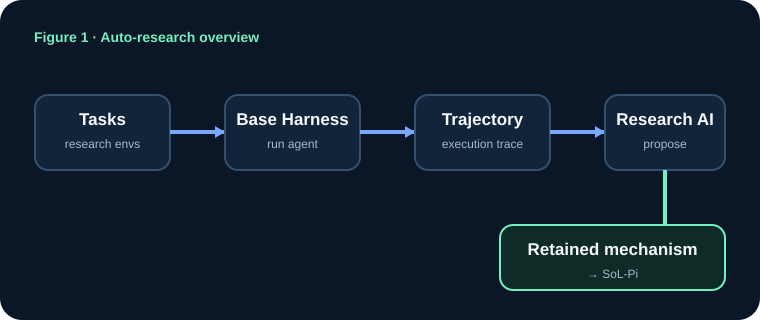

기존 agent
자명한 일에도 LLM을 다시 부르고, 긴 로그와 지난 대화를 반복 전송합니다.
ARXIV:2609.20519 · BEGINNER GUIDE
SoL-Pi는 새 LLM이 아닙니다. 모델은 그대로 두고, 파일·도구·테스트·컨텍스트를 다루는 하네스의 낭비를 줄입니다.
30초 이해

자명한 일에도 LLM을 다시 부르고, 긴 로그와 지난 대화를 반복 전송합니다.
반복 행동은 하네스로 옮기고, 큰 출력은 참조화하며, 오래된 맥락은 이득일 때만 정리합니다.
비싼 지능을 불필요하게 호출하는 순간을 줄입니다.
핵심 메커니즘
edit → LLM → test
edit + test를 한 계약으로
GPT-5.6 Sol: tokens −11.9%, score +4.1%끝난 대화를 계속 재전송
경제적으로 이득일 때만 압축
Sol: tokens −40.2%, score −6.3%큰 결과를 매 호출마다 복사
원문 보존 + handle/excerpt 전달
Sol: tokens −6.1%, score +5.3%비싼 모델이 긴 로그 전체를 읽음
싼 모델 추출 + 결정론적 검증
Sol: tokens −10.0%, score −0.45%EdgeBench · GPT-5.6 Sol
full stack은 평균 score가 약 6.3% 내려갑니다. 따라서 “같은 성능으로 비용 절반”이 아니라, 성능–비용 Pareto trade-off를 이동시킨 결과입니다.
같은 메커니즘도 모델마다 trigger rate와 intensity가 다릅니다. 즉 최적점은 model × harness에 따라 달라집니다.
논문 Figure 1–8

하네스 자동 최적화가 동일 모델의 token/cost를 줄일 수 있다는 전체 개요입니다.
Claim boundary
같은 모델에서도 비용·토큰·점수가 크게 달라졌고, 네 메커니즘은 executable benchmark에서 작동했습니다.
Sol에서 찾은 메커니즘이 Opus 5에서도 작동했지만, 모든 모델·코드베이스에 일반화됐다고 보기는 이릅니다.
weight 자기개선, 계속 가속되는 compounding RSI, harness-pretraining scaling law는 아직 증명되지 않았습니다.